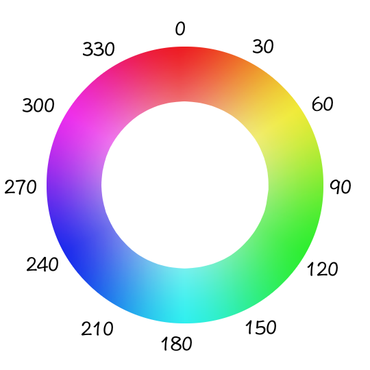

HSL Colors
HSL colors are specified via a call to this JavaScript function: hsl(hue, saturation, lightness). The parametsr of this
function are as follows:
- hue: this must be between 0 an 360 and represents an angle on the color wheel.

- saturation: this must be between 0 and 100 and represents how greyed the color appears. 0 (0%) means the
color just appears as grey while 100 (100%) means there is no greying of the color at all.
- lightness: this must be between 0 and 100 and represents how darkened or lightened the color appears.
0 (0%) means the color appears as black, 100 (100%) means that the color appears as pure white and 50 (50%)
means that the color is normal.